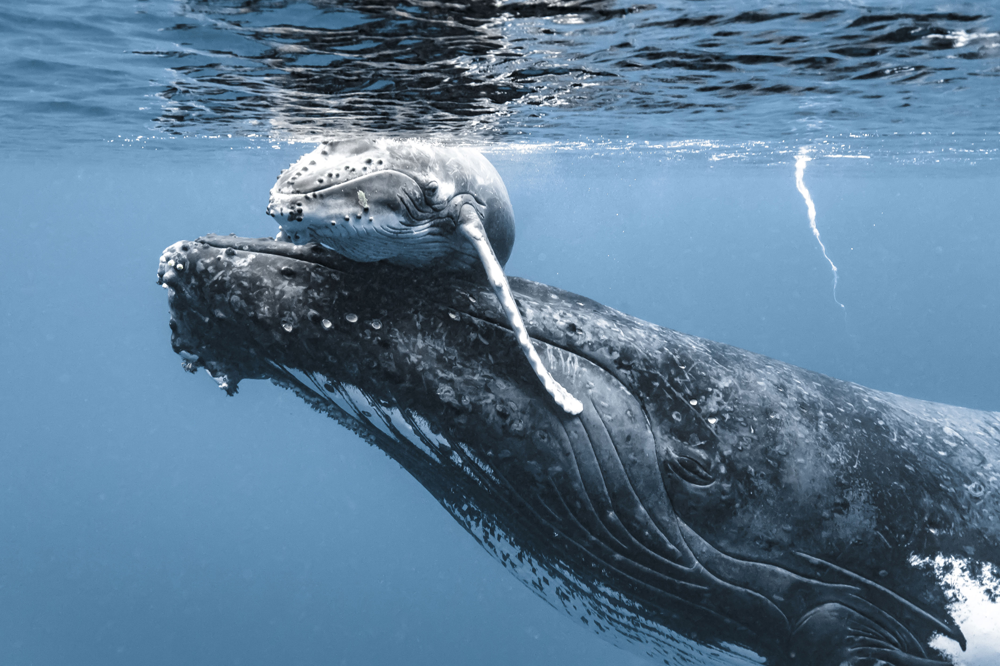
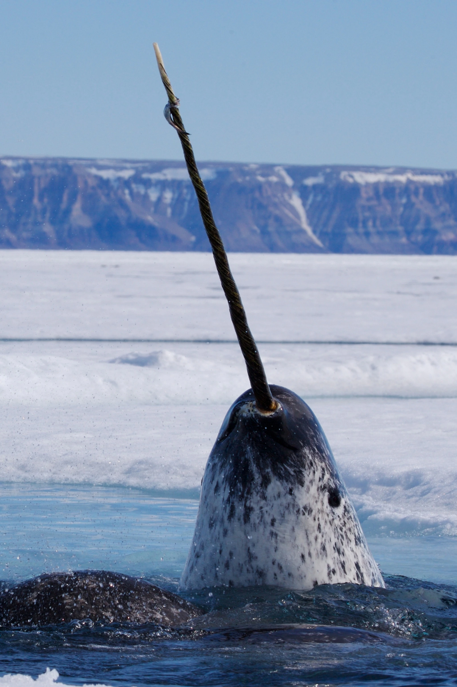
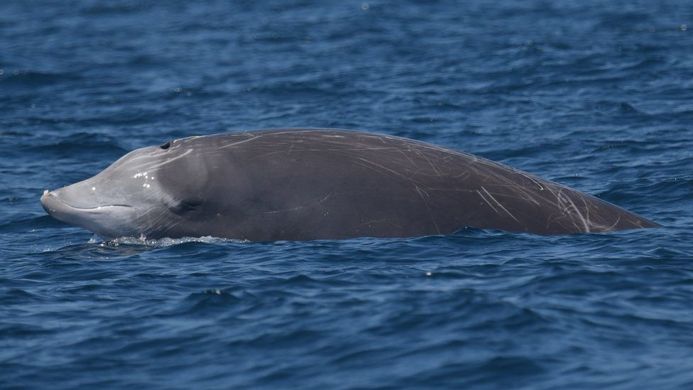

Whales
Humpback Whale
Baleen whales (systematic name Mysticeti), also known as whalebone whales, are a parvorder of carnivorous marine mammals of the infraorder Cetacea (whales, dolphins and porpoises) which use keratinaceous baleen plates (or "whalebone") in their mouths to sieve planktonic creatures from the water. Mysticeti comprises the families Balaenidae (right and bowhead whales), Balaenopteridae (rorquals and the gray whale), and Cetotheriidae (the pygmy right whale). There are currently 16 species of baleen whales. While cetaceans were historically thought to have descended from mesonychids, molecular evidence instead supports them as a clade of even-toed ungulates (Artiodactyla). Baleen whales split from toothed whales (Odontoceti) around 34 million years ago.

Narwhal
The narwhal, also known as a narwhale (Monodon monoceros), is a medium-sized toothed whale that possesses a large "tusk" from a protruding canine tooth. It lives year-round in the Arctic waters around Greenland, Canada, and Russia. It is one of two living species of whale in the family Monodontidae, along with the beluga whale. The narwhal males are distinguished by a long, straight, helical tusk, which is an elongated upper left canine. The narwhal was one of many species described by Carl Linnaeus in his publication Systema Naturae in 1758.

Beaked Whale
The Cuvier's beaked whale or goose-beaked whale (Ziphius cavirostris) is the most widely distributed of all beaked whales in the family Ziphiidae. It is smaller than most baleen whales yet large among beaked whales. Cuvier's beaked whale is pelagic, inhabiting waters deeper than 1,000 feet (300 m). It has the deepest and longest recorded dives among whales at 9,816 feet (2,992 m) and 222 minutes respectively, though the frequency and reasons for these extraordinary dives are unclear. Despite its deep water habitat, it is one of the most frequently spotted beached whales.

Blue Whale
The blue whale (Balaenoptera musculus) is a marine mammal belonging to the baleen whale parvorder Mysticeti. Reaching a maximum confirmed length of 29.9 metres (98 ft) and weighing up to 199 tonnes (196 long tons; 219 short tons), it is the largest animal known to have ever existed. The blue whale's long and slender body can be various shades of greyish-blue dorsally and somewhat lighter underneath.